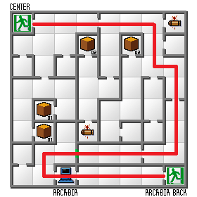
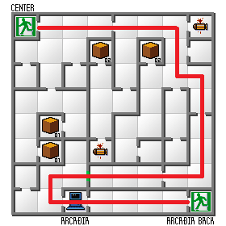

| Law END | Neutral END | Chaos END | All Bosses |
Valhalla
Town
Mash through text, reply Yesはい to Okamoto. Choose Trainingトレーニング to head into the VIRTUALGYM.
Change settings to Text Speed to Tab(なし) and Auto Battle to Repeatリピート. You can also choose to change status effects to Wordsワード if you'd prefer.
Stand on the first door transition to spawn encounters and grind to level 8. Put points into SPDすばやさ. Talk to Okamoto to leave the Gym and then leave, receiving the ¥100.
Head east to the last room and name Zain.
Head into the Virtual Battler and choose Virtual Battlerヴァーチャル・バトル -> Level 1レベル 1. Talk to Steven, say Yesはい and receive the Demon Summoning Program.
Enter the Fortune Teller and tell her Noいいえ about remembering the Heroine's name. You'll learn her name is Hirokoヒロコ.
Head back to the gym to talk to Okamoto and receive ¥200 more. Return to the Virtual Battler and, again, choose Virtual Battlerヴァーチャル・バトル -> Level 1レベル 1. Head straight forward and name Gimmel. Afterwards, turns back and leave.
Head to the gym and save. Leave the town and walk to the Colosseum.
Colosseum
Take the stairs up and mash through the announcer's speech.
Pick up the Fritz Helmフリッツヘルム ((1), Legger Slumレッガースラム (2), Guyser Armorカイザーアーマー (3). Now you can defeat encounters to level up to level 9 - assign point to SPDすばやさ. After that, on any hero level up, assing points to INT. Afterwards, pick up Slicerスライサー (5) and equip everything. At NEW MOON or HALF MOON enter the fight. Name Daleth.
Fight Red Bear.
- AUTO
Talk to Hiroko and say: NO -> NO. Head east to leave.
Slum City
Leave the HANEDABUILDING and walk into the Messia Church to bookmark the Valhallla terminal. Leave and head to Madame's Mansion.
Name Beth. Say Yesはい and get Cerberus. Leave.
Near the entrance to the bridge, recruit Fairy High Pixie ヨウセイ ハイピクシー and Jirae Knockerジラエ ノッカー. AUTO any other enemy. Head inside the bridge and head to the Slum City.
In the Slum City, fight Mercurius:
- AUTO
- Hero - INT (until 9 INT)
Recruit an Alp, grab chest 01 - a Dis-Poisonディポイズン - and make sure you're level 12 before heading into the Mansion to fuse an Heqet:
- Knockerノッカー x Alpアルプ = Cait Sithケットシー
- Cait Sith x High Pixieハイピクシー = Heqetヘケト
Head back through the bridge. Get a Cait Sith around Madame's Mansion. If there's room in the COMP and you find one, get Ihika or Sudama. If you reached 9 INT, put points into Speed.
It's more recommended to get a Sudama because it has Rakukaja which will be useful in battle, but a Ihika also works. After getting one of them, and while searching for Cait Sith, defeat Ihikas as they have a chance of dropping Dis-Poison's, which will be useful in the next segment.
Unequip Hiroko's Sword, Gun and Bullets and enter the Mansion. Name the interesting hair guy (it's us).
Holy Town
Save at terminal and leave the center.
Basilisk
Grab the chest - a Gold Pillきんだん. Put code (0352). Summon Heqet and Cait Sith.
Formation: Messian, Hawk, -, Cait Sith, Heqet, -.
Unequip Gun and Bullets on Beth and equip the whipさそりムチ. Leave.
Recruit Jack Frost. Defeat Basilisk whenever possible. If you get poisoned, it's preferrable (though more dangerous) to heal in Battle. Use a Dis-Poison or Heqet's Posumudiポスムディ to heal Aleph and Beth because the poison status reduces attack power.
If you have Jack Frost, summon it beforehand and use Rakukaja.
- Sword, Sword, Tarukaja, Attack
- If someone is low health, heal with Beth's Media
- If Cait Sith dies, you can revive it afterwards with the Gold Pill
- Don't let both Heqet and Cait Sith die
- Points: Hero - INT (if >9, SPD), Beth - SPD.
You can start escaping from encounters. If you're low on money (under 4k) then you can defeat them by attacking with everybody except for Caith Sith and Jack Frost who are more vulnerable
King Frost
Summon the Jack Frost before the King Frost fight - Formation: Messian, Hawk, Jack Frost, Cait Sith, Heqet, -.
- Sword, Sword, Rakukaja, Tarukaja, Attack
- You can heal with Heqet's Media but leave enough MP for Traport (6 MP)
Return Jack Frost and use Traport with Heqet. Heal at the Messiah if needed. Go talk to the sage in floor 21F. Leave again.
Factory
Put code (6191). Leave to Factory.
Stop by Factory Town, enter Weapon store.
- Sell: Head Gearヘッドギア, Laser Bootsレザーブーツ, Survival Vestサバイバルベスト, Muscle Drinkマッスルドリンコ, Attack Knife、アッタクナイフ, Block Knifeボロックナイフ, Legger Slumsレッガースラム, Jetジェットボーラ, Queen Bootクイーンビュート, Beretta 92Fベレッタ９２Ｆ, Bulletsつうじょうだん
- Buy: Gonz Pistolゴンズピストル, Bulletsしんけいだん
- Equip: Aleph - Gonz Pistolゴンズピストル, Bulletsしんけいだん
Traesto with Heqet.
Go to church to bookmark the terminal. Get Slave or Demi-Nandi. Go to the ranch.
- AUTO
Head to the underground to make way to the Betelgeuse fight.
Get Cu Sith before entering the E building. After you defeat Betelgeuse, the encounters change so you need to get it before. Enter on Full MOON - the Sapphire in B3F only appears on Full Moon. Resummon Jack Frost.
Get Cu Sith before entering the E building. Enter on Full MOON - the Sapphire in B3F only appears on Full Moon. Resummon Jack Frost.
Fight Betelgeuse:
- First turn: Hawk - Gun; Messian - Media; Jack Frost - Rakukaja; Heqet - Attack; Cait Sith - Tarukaja
- AUTO
If you still don't have the Sapphire, use Traestro, advance moon to Full Moon and grab it. Return Cait Sith and Jack Frost and Traport.
Arcadia
Go back and talk to the sage. Traport and leave the building.
 

Put code (9103).
Head into the terminal to bookmark it. Leave and head to Gimel's house to talk to him.
Valhalla Revenge
Daleth
Traport back to the Center. Talk to the elder. Traport and enter the terminal to transfer to Valhalla. Save. Heal at the Messiah if necessary.
Enter the Valhalla Passageway (it's the door right next to the one you just left from). Head to the Mansion.
Fuse Unicorn: Jack Frost x Cu Sith.
Traestro. Head to the Colosseum. If you still don't have a Sudama or Ihika, get one outside.
Summon Unicorn before the fight.
- 1 Formation: Hawk, Unicorn, - ,Heqet, Beth, -
- First turn: Gun, Attack, -, Attack, Media
- Heal Hawk after the cutscene with any Beads or Healing items. If you don't have any, pray I guess.
- Then Hawk - Gun, Unicorn - Attack, Heqet - Media. Auto.
Say NO. Leave.
Slum City
Head to Slum City. Talk to Mekata and heal up at the Gaia.
Underground
Hiroko's Rescue
For this section, some of the fights can be dangerous. It's better to return a demon than to let it die.
Leave and head through the passage. Summon Cait Sith and Sudama (don't summon Ihika if you have it). Don't let Cait Sith die.
Fight.
- Formation: Hero, Unicorn, Sudama, Heqet, Cait Sith, -
- First turn: Gun, Rakukaja, Rakukaja, Media, Defend
- Second turn: Gun, Rakukaja, Rakukaja, Media, Tarukaja
- AUTO
Heal if needed at the Gaia. Put Codes (9192) -> (1213) -> (1834). Pay attention to MP consumption.
If you're low on money due to having to revive demons then grab the treasure chest on the other side of the wall southern of the Gaia. If you get an Archangel and Angel encounter, always talk to the Angels, they are easier to send away. Both of them can kill you so always either talk or try to run away, they are the biggest run killers.
Fight Yanusu.
- First turn: Gun, Rakukaja, Rakukaja, Media, Tarukaja
- AUTO until Sudama is low on MP. Then, Gun/Attack with Everybody and then AUTO.
Leave.
(Optional) Enter in New or Half Moon.
Fight Zain. Summon all demons.
- First two turns: Gun, Rakukaja, Media, Defend with rest
- Next two turns: Gun, Rakukaja, Rakukaja, Media, Tarukaja
- Rest: Gun, Attack, Media, Media
- AUTO
Rescue Heroine. Go all the way back through the Underground to the Passage.
If you're low on money and haven't already grab grab the treasure chest on the other side of the wall southern of the Gaia.
Talk to Zain. Turn back around and get Cerberus. If any of the demons are dead, summon it and revive with Samarecarm. Head outside to the center. Take the passage to Holy Town.
Holy Town
Watch Zain speak in the TV.
Enter through the west entrance of Holy Town. Recover at the Garage if needed. Bookmark the Terminal. Traestro. Estoma.
Enter the Grand Church on 7/8 Ascending. If you're low on money grab the the other treasure chest (1) for 738 makka. Get Topaz. Head to 3F. Summon Cerberus and revive any dead demons before the fight.
Fight Daleth:
- Formation: Hawk, Unicorn, Cerberus, Heqet, Hiroko, Cait Sith
- First turn: Defend, Rakukaja, Fire Blaze, Media, Media, Tarukaja
- AUTO
Samarecarm any dead demons. Return Cerberus. Take the elevator to 1F then take the second to B60F.
Underground - Further Down
In this section, watch out for MP.
Shinjuku
Enter at 6/8 Ascending. Bookmark/Save at terminal and heal at Gaia. Talk to Anun and get the Turquoise then head to B1F and talk to Obarion. Traestro.
Enter Former Higashi Shinjuku and return Unicorn and Heqet. Say NO to every of Peter Pan-looking boy's requests. He'll ask many times. After reaching the last tile of 3F, say: NO -> NO -> YES.
After all that, summon Unicorn and Heqet back, heal any status effects and traport.
Talk to Obarion again. Leave through B3F. Estoma.
Akasaka and Roppongi
Watch out for your moon cycle (shouldn't enter before half moon ascending).
Bookmark terminal. Save. Leave Akasaka.
Enter Roppongi at 6/8 Ascending. Bookmark terminal. Grab Pearl and chest in B1F. Talk with Hiruko: YES -> NO -> YES. Traport to go back to Akasaka.
Go to the Mansion.
- Fuse: Cait Sith x Slave/Demi-Nandi = Bicorn
- Sword: Bicorn x Sword
Head into the Bar. Buy one of each. Each drink will buff Aleph and Hiroko's stats. However, if you are on an ascending moon age, watch out as you need those buffs to help you defeat the next fight and they wear out at Full Moon. It takes me an average of 4 moon cycles to get to the shrine so if you are at Half Moon ascending, go outside, advance the moon cycle to Full Moon and only then enter the bar and drink.
Equip the sword on Hawk. Reorder party (Hawk, Unicorn, -, Hiroko, Heqet, -). Head into the Gaia and heal up. Traestro.
Underground - Masakado Revival
Fight at the Shrine.
- First turn: Sword, Rakukaja, Media, Media
- AUTO
- Afterfour turns: Sword, Attack, Media, Defend - AUTO
- If Heroine dies, summon Cerberus and revive her.
- Points: Hero - 2 MAG (7 total without the stats boost - blue points) /SPD ; Heroine - INT
Recruit the little guy.
Head to Roppongi. Enter the terminal and transfer to Arcadia. Head to the Arcadia passage.
Get Chest 1 (Dis-Stone) on the way. Head to the next shrine, use the Dis-Stone to un-Stone the buddha. Then head into a building and traport to Akasaka. Go to the gaia and heal then leave.

Enter the hole to get the item from the Dwarf. Then head to the shrine to the right.
Enter Ouyamatsumi's Shrine and leave after you get him. Then leave and head to Okuninushi's shrine.
Fight Baphomet.
- Say no.
- AUTO
Use Traport. Then transfer to Shinjuku.
Leave Shinjuku. Enter the passage to the Grand Church and head to the 3F. Talk to the man: YES -> NO -> おどしとる (second option on top). Traport to Akasaka. Say YES at the Mansion to restore Masakado.
Transfer to Roppongi and save.
Walk into the Rag Store and trade.
- Sapphireサファイア x Topaz トパーズ = Sylph
- Turqoiseターコイズ x Pearl>パール = Undyne
Let Hiruko restore Masakado's soul and then traport to leave.
Head to the cave to meet Hiruko and the newly revived Prince Masakado. Say NO to not enter Japanese Gods' Prison.
Stop by the altar to leave the first pillar. Go to Roppongi, traport and transfer to Holy Town.
Pillars
Siren and Petersen
Heal at the Garage. Leave and head to the Grand Church.
Talk to the man and agree with him.
Head to the Makai Passage and say: YES -> YES -> YES -> YES -> NO -> YES -> YES.
Say Yes to Petersen. Head back to the Grand Church. Traport. Transfer to Factory. Save.
Take the passages. Talk to prisoner, say YES, talk to Zain and agree with him, then Traport.
You should be low on MAG at this point so cast estoma and return the demons. Go to the Observation Tower.
Summon Undyne before the fight.
Fight Betelgeuse.
- Formation: Hawk, Unicorn, Undyne, Hiroko, Heqet, -.
- First turn: Sword, Rakukaja, Mediarama, Defend, Defend
- AUTO (2 Turns)
- Sword, Attack, Mediarama, Defend, Defend
- AUTO
Return Undyne. Talk to Seiren then traestro. If Heqet is out of MP, summon Sylph and Traport.
Go all the way down the passages to receive another pillar.
Disco
Traport and transfer to Holy Town. Save. Heal at the Repair Garage and go to Mansion to fuse.
- Undyne x Sylph = Freya
Go to the TV. Talk to Zain. Enter the southern entrance at FULL MOON and go to the Bar. Head to the Junks to receive the next pillar - if you don't have any reanimation items, buy Kindan. Then traport and head to the Disco to receive the other pillar (say YES) by winning the dance battle.
Transfer to Arcadia. Take the passage to the Center.
Center
Head into the Center.
Put the code in [5261]. Put the code in [2784]. Say NO -> YES -> NO to YHVH. Return Heqet and Unicorn and summon Freya and Cerberus.
Fight Raphael and Uriel.
- Formation: Hawk, Cerberus, - , Hiroko, Freya, -
- First turn: Sword - Raphael, Attack - Raphael, Media, Tarukaja
- If Hiroko dies, use Samarecarm with Cerberus and Mediarama with Freya.
- If Aleph maxes SPD, points into STR
- Hiroko points into VIT
Fight Michael.
- First turn: Sword - Raphael, Attack - Raphael, Media, Tarukaja
- AUTO
Fight FAKE YHVH.
- First turn: Sword - Raphael, Attack - Raphael, Media, Tarukaja
- AUTO
Head Pillar
Traport. In Holy Town, head to the Great Church. Watch the cutscene, enter it then traport. Head to the Mansion and fuse.
- Cerberus x Unicorn x Sudama/Ihika = Naragiri
Head to the terminal and transfer to Roppongi. Save.
Talk to the dude, get the last pillar. Now put all of them in the altars so the last head altar shows up. Walk to the head altar and put the last pillar. Go to Makai.
Makai
Diamat
Go to Yesod.
Save. Leave. Enter Yeshira at 1/8 Descending. Summon Freya. (Formation: Hawk, Naragiri, -, Hiroko, Freya).
Fight Hekate
- Sword, Rakunda, Defend, Tarukaja
Take the HOD exit.
Fight Diamat.
- AUTO
Master Terion
Traport. Go back through Yeshira and take the Netzach exit.

Enter at 7/8 ascending. Fight Master Terion.
- AUTO
Astoroch
Traport. Head back through Yeshira and take the Tiphrareth exit.
Save in Tiphrareth. Leave and estoma.
Get a Selket outside. Go to the Mansion in Tiphrareth and fuse:
- Selket x Freya = Anubis
Watch the event. Go up to the ranch to talk to Zain (Say NO). Then head into the Center Tower and traport. Leave Tiphrareth.
Enter the Seto Temple to watch the ressurection. Then head to Beria corridor.
Fight Astoroch
- AUTO
Say YES to Lucifer. Heal up any ailments. Head into Beria corridor.
Abaddon
Estoma. Say NO to Mekata. Leave again.
Fight Abadon.
- Formation: Hawk, Naragiri, -, Hiroko, Anubis, -
- First turn: Sword, Rakunda, -, Media, Tarukaja
- AUTO
- Hawk Points - STR
Re-enter the Beria Corridor.
Satan
Enter the Geburrah building. Walk straight forward to the the terminal and save.
Fight Twelve War Gods
- Formation: Hawk, Naragiri, Hiroko, Anubis, -
- First turn: Sword, Rakunda, Media, Tarukaja
- AUTO
- For Santira, use Mahama with Heroine.
Head to Bina. Grab the robe from the right then head to the building on the left.
Go to the Gaia and buy 5x Asura Hand. Go to the healer and buy as many Nyorai Statues as you can. Go to the terminal and save.
Transfer to Arcadia to head to the Center.
Head to Eden
Put the code [3470].
Watch Satan's revival and get kicked out again. Enter a building and Traport.
Mara
Head to Mara Tower.
Fight Mara
- First turn: Sword, Rakunda, Diarahan, Tarukaja
- If Aleph gets paralyzid, heal with Hiroko's Paraldi
- AUTO
Finally head to Lucifer
Kether Castel
Go up.
Enter at 2/8 Ascending or 6/8 Descending. This is so we do the Satan fight at Half Moon.
Head to the terminal and summon Lucifer and Heqet and heal at the Gaia before saving.
Fight Shadai.
- Formation: Aleph, Naragiri, Lucifer, Hiroko, Anubis
- Let Heqet die
- Watch out for status effects, possibly heal with Asura's hand
- 2x turns: Sword, Rakunda, Attack, Media, Tarukaja
- Rest: Sword, Attack, Attack, Media, Defend
- AUTO
- Aleph - STR; Hiroko - MAG
Fight Shabbaoth.
- Formation: Aleph, Naragiri, Lucifer, Hiroko, Anubis
- Watch out for status effects, possibly heal with Asura's hand
- 1x turn: Sword, Rakunda, Attack, Media, Tarukaja
- Rest: Sword, Attack, Attack, Media, Defend
- AUTO
- Aleph - STR; Hiroko - MAG
Fight Elohim.
- Formation: Aleph, Naragiri, Lucifer, Hiroko, Anubis
- Don't let Anubis' MP drop below 80.
- Watch out for status effects, possibly heal with Asura's hand
- 3x turns: Sword, Rakunda, Attack, Media, Tarukaja
- AUTO
- Rest: Sword, Attack, Attack, Media, Defend
- Aleph - STR; Hiroko - MAG
Fight Satan.
- Formation: Aleph, Naragiri, Lucifer, Hiroko, Anubis
- 1st turn: Sword, Rakunda, Attack, Media, Judgement
- If you have any Soma's, recover Anubis and use Judgement again
- Others: Sword, Rakunda (3x), Attack, Media, Tarukaja (2x)
- Others (again): Sword, Defend, Attack, Media, Defend
- AUTO
- If Anubis die, recarm and Sabbadon it with Lucifer
- Aleph - STR; Hiroko - MAG til 15, VIT
Fight YHVH.
- Formation: Aleph, Naragiri, Lucifer, Hiroko, Anubis
- Sword, Rakunda (4x) -> Attack, Attack, Necroma - Heqet -> Diarahan - Lucifer, Tarukaja (2x) - Attack
- AUTO. Because Nyorai Statues are used automatically, YHVH will keep attacking and trying to kill you but you get automatically revived. The only fatal spell, the instant kill spell, is nullified by the necroma'd Heqet. Therefore, as long as you kill YHVH before you run out of rosaries, you can just AUTO and enjoy the show
End.